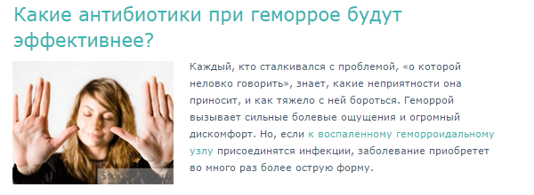
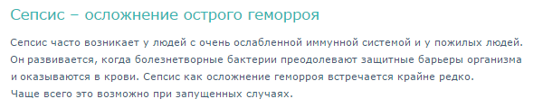

Как известно, пациент, обладающий медицинской информацией о своём заболевании, имеет больше шансов на эффективное взаимодействие с лечащим врачом и на выздоровление. Врачу значительно легче работать с пациентом, представляющим основные моменты этиологии, патогенеза, исходов заболевания. Но насколько «полезны» сайты, пропагандирующие методы лечения?
Как известно, пациент, обладающий медицинской информацией о своём заболевании, имеет больше шансов на эффективное взаимодействие с лечащим врачом и на выздоровление [1]. Врачу значительно легче работать с пациентом, представляющим основные моменты этиологии, патогенеза, исходов заболевания. На примере участия пациента в клиническом исследовании мы можем убедиться, что время, потраченное на дополнительное информирование пациента перед началом лечения (чтение документа и беседа перед подписанием информированного согласия) снимает большое число трудностей в будущем и делает пациента комплаентным и равноправным участником терапии. Ввиду того, что большая часть пациентов проходит лечение амбулаторно, а у врача не всегда есть свободное время, такая дополнительная информация, способствующая положительному исходу терапии, может быть перенесена из клиники на некоторый дополнительный ресурс.
Не секрет, что даже маркетологи в курсе, что препарат, имеющий постоянную информационную поддержку на сайтах для пациентов, врачами назначается чаще. Поскольку последние тоже заинтересованы в грамотном отношении пациента к лечению. За рубежом наличие системы образования пациентов является обязательным условием аккредитации ЛПУ. Вспомните наши «школы диабетиков», которые, безусловно, внесли свой вклад в улучшение контроля сахарного диабета. В реальности же создание книг, журналов, викторин, аудиозаписей профессионалами в области обучения пациентов — достаточно трудоёмкий и небыстрый процесс. Доступ же к конечному продукту будут иметь ограниченное число пользователей. Такая работа не поддерживается активно государственными учреждениями, если не считать стенгазет во время эпидемии гриппа. Безусловно, вся мощь продвижения информации принадлежит Интернету.
Обратимся к нему, чтобы понять, чем может руководствоваться пациент в выборе терапии, или чем он может усилить свою приверженность назначенному лечению. Предлагаю выбрать для этого нозологию, которая при относительной серьёзности и риске осложнений всё же не погонит каждого пациента к врачу, а часть из них заставит искать тот самый поддерживающий информационный ресурс.
Геморрой является отличным примером. При потрясающей его распространённости среди взрослых по этическим причинам пациенты далеко не сразу сообщают о своём страдании даже хирургу. Хирург, кстати, не является специалистом для каждого из подобных больных. Он может легко в рамках действующей маршрутизации отправить пациента к колопроктологу. Тот же, будучи значительно более редким врачом на амбулаторном приёме, не так уж доступен для пациента и может осуществлять коммерческий приём. В диагностике геморроя необходимость скрининга рака толстого кишечника важнее, чем постановка банального диагноза; таким образом, посещение колопроктолога в 100% случаев закончится для пациента направлением на ректороманоскопию, колоноскопию и подобные исследования, которые сами по себе оттолкнут многих пациентов, недостаточно осведомлённых о важности диагностики. Таким образом, пациент с геморроем, выслушав пересказы своих коллег по несчастью, с большой долей вероятности будет искать спасение на специальных сайтах, где без стеснения и очередей может получить информацию о всех аспектах геморроя. Главное — выбрать правильное лечение.
По запросу в поисковике «как лечить геморрой», «лечение геморроя», «геморрой» пользователю предлагается один из популярных ресурсов.
Наиболее вероятно, что наш побоявшийся посетить хирурга пациента будет обращать внимание на рубрики, посвящённые консервативному лечению. И здесь мы видим вот такие пункты.

Это не единственные варианты лечения, согласно сайту, но написаны они убедительно, и мы не знаем, во пациент поверит больше. В лечение геморроя огурцом и «силой земли», как в известном ролике, или в лечение антибиотиками?
Увидев отдельные подразделы, лично я засомневался в том, что антибиотики не нужны пациентам с геморроем. Уж не скрывают ли от нас проктологи чего-то жизненно важного?

Для лечения воспаления при геморрое сайт рекомендует, в основном, левомицетин, тетрациклин и гентамицин.
В принятых Государственным Научным Центром Колопроктологии стандартах лечения роль антибиотиков отражена чётко при парапроктитах и других бактериальных инфекциях. Подробнейшие стандарты лечения выложены на официальном сайте ассоциации. Кстати, ни одного из упомянутых выше препаратов в стандарте лечения абсцессов области прямой кишки нет, что с медицинской точки зрения совершенно верно. Лечение геморроя антибиотиками является бессмысленным, назначение антибиотиков ввиду развития осложнений геморроя является чрезвычайно редким. В таком случае пациент должен быть госпитализирован и получать совершенно иные препараты.
Продолжая читать раздел, посвящённый антибиотикотерапии геморроя, можно отметить, что здесь не только неграмотные рекомендации, но и ужасающая путаница с препаратами. Так, например, в подразделе «Лучшие антибиотики при геморрое» перечислены: «Левомеколь», «Проктоседил», «Детралекс» и «Гепатромбин Г». То есть смешаны в кучу как местные, так и системные препараты, при этом собственно антибиотиком ни одним из них не является. Скромное местное антимикробное действие «Левомеколь» вряд сможет спасти пациента от тех ужасных осложнений, которые упомянуты на сайте.
Пациент, неудачно выбравший именно этот ресурс, вполне может нанести себе вред приёмом антибактериальных препаратов не по показаниям, а присоединившаяся диарея, например, сделает его геморрой более значимым событием в жизни, чем изначально ожидалось. Сайт грешит и другими «ляпами» относительно выбора лечения. При том, что основа лечения геморроя, — это хирургические процедуры, вероятность вреда от сайта достаточно велика.
Критиковать очень просто: на каждом диване в каждой квартире у нас есть дипломированные критики. Какие меры могли бы избавить наших любимых пациентов от опасности «лечения» на подобных сайтах? Опыт зарубежных коллег и здравый смысл подсказывает, что лучшие ресурсы поддержки пациентов могут создать лишь врачи-специалисты совместно с ассоциациями пациентов. Можно на первом этапе предложить созвать некоторый волонтёрский штаб, который будет просматривать медицинские ресурсы интернета и присваивать им некий «рейтинг». Скажем, давать им право разместить некоторый «лейбл», который будет говорить о том, что данный сайт безопасен для пациентов, и информация на нём соответствует актуальным стандартам лечения. Этот знак будет подобен знаку «Ревизорро» на двери ресторана и станет меткой добросовестности создателей сайта. Экспертами-волонтёрами могли бы стать анонимно или явно специалисты по соответствующим дисциплинам и члены ассоциаций пациентов, чтобы видеть проблему с двух точек зрения. Сайты, не прошедшие «проверку», можно публиковать на особом ресурсе, ссылкой на который и будет являться «знак качества», размещённый на адекватных сайтах. При определённой степени внедрения такой инициативы, её прозрачности и качества проверок, со временем информационные ресурсы парамедицинских сайтов сами станут приглашать ревизоров на проверку и продвигать эту идею, критикуя своих конкурентов, не прошедших тест.
В дальнейшем, при повышении культуры пользователей и «писателей» информации на сайтах, можно было бы предложить узаконить и обязать ассоциации всех врачебных сообществ создавать и поддержать ассоциации пациентов по своему профилю с единым сайтом для медицинской поддержки своих клиентов.
Будьте внимательны при выборе сайта для поиска лечения. Не все сайты, рассказывающие о терапии геморроя, одинаково полезны!
В.В. Привольнев
1. Головин В.А. Зарубежные медицинские сайты для пациентов. Вятский медицинский вестник. Выпуск №2 / 2011